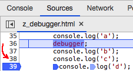

To un/set a breakpoint, click a line number.

Click play to continue execution until next breakpoint reached.
To see the current values of your variables, use Local and Script (under Scope).
Click here to learn a lot more about the debugger.